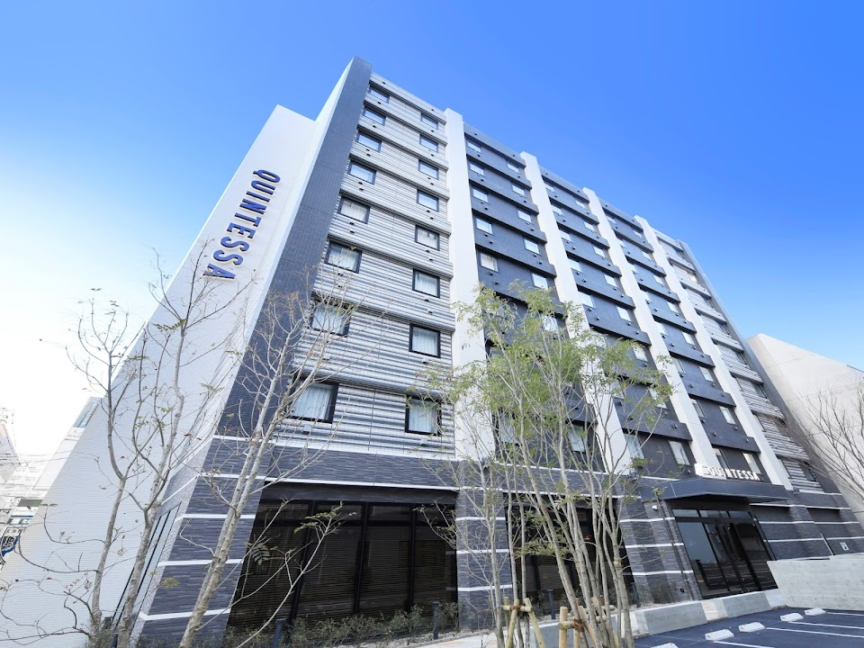

이 호텔은 위생·오감 관련 불만이
후쿠오카 평균보다 1.8배 많아요!

위치
3 Chome-2-10 Tenjin, Chuo Ward, Fukuoka, 810-0001 일본 · 1박 약 22만원 (20만원 이상 가격대)
이 호텔에서 실망할 확률
10%
후쿠오카 평균(12%)보다 안심할 수 있는 수준이에요
최근 투숙객 100명 중 10명이 심각한 문제를 언급했어요
최근 투숙객 100명 중 10명이 심각한 문제를 언급했어요
우수
평균 12%
위험
최근 리뷰일수록 높은 가중치로 반영됩니다
분석 리뷰 431건 · 기준 2026년 3월
분석 리뷰 431건 · 기준 2026년 3월
카테고리별 위험도
후쿠오카 평균 = 50 · 3배 나쁘면 100
퀸테사 호텔 후쿠오카 텐진 코믹앤북스
후쿠오카 평균
리스크 상세 분석
대분류 6개 · 소분류 20개 전체 — 숫자는 위험도(0~100), 후쿠오카 평균이면 50이에요
🧼위생 경보
주의 · 위험도 70 · 후쿠오카 하위 13%
양호평균 50위험
-
침구/바닥 청결얼룩 · 머리카락 · 먼지62
-
청소 서비스청소 불량 · 쓰레기 방치69
-
해충/곰팡이벌레 · 빈대 · 곰팡이100
👂오감 지옥
주의 · 위험도 61 · 후쿠오카 하위 21%
양호평균 50위험
-
벽간/외부 소음옆방 소리 · 도로 소음23
-
악취 역류하수구 · 담배 · 곰팡내86
-
기기 소음에어컨 · 냉장고 소음29
🏚️시설 사기단
주의 · 위험도 50 · 후쿠오카 하위 43%
양호평균 50위험
-
공간/노후화비좁음 · 낡은 시설52
-
냉난방/수압냉난방 불량 · 수압 약함36
-
네트워크/TV와이파이 · TV 불량40
🗺️동선 파괴자
양호 · 위험도 22 · 후쿠오카 상위 12%
양호평균 50위험
-
역/거점 접근성역에서 멀다 · 찾기 어려움14
-
지형적 난관언덕 · 계단48
-
주변 편의성편의점 · 식당 없음12
-
허위 위치 정보위치 정보 불일치0건5
💬불친절 레이더
주의 · 위험도 50 · 후쿠오카 하위 44%
양호평균 50위험
-
응대 태도불친절 · 무시56
-
처리 지연체크인 지연 · 대기34
-
사후 대처보상 거부 · 무대응50
-
소통 불가언어 소통 문제0건5
🔒안전 그림자
양호 · 위험도 21 · 후쿠오카 상위 27%
양호평균 50위험
-
보안 시설도어락 · CCTV41
-
주변 치안밤길 · 우범지대0건5
-
사생활 보호방음 · 프라이버시0건5
위험 70+주의 45~70양호 ~45
불만 리뷰 5건 미만 소분류는 위험 등급을 붙이지 않아요 · 인용문은 리뷰 원문 발췌입니다
구글 별점 분포
최근 1년 2점 이하 리뷰 비율은 10% 입니다.
총 233건
- 1점7%
- 2점3%
- 3점11%
- 4점26%
- 5점53%
리뷰
심각도 · 최신순
이런 호텔은 어떠세요?
비슷한 가격대·가까운 위치에서 실망 확률이 낮은 순이에요
-
양호실망 확률 3%

The Gate Hotel Fukuoka by HULIC
THE GATE HOTEL 福岡 by HULIC구글 4.6 · 리뷰 204개1박 약 28만원 -
양호실망 확률 6%

H Hotel
Fukuoka구글 4.4 · 리뷰 107개1박 약 63만원 -
양호실망 확률 6%

코트 호텔 후쿠오카 텐진
コートホテル福岡天神구글 3.8 · 리뷰 726개 -
양호실망 확률 6%

호텔 일 팔라조
ホテル イル・パラッツォ구글 4.1 · 리뷰 992개1박 약 29만원 -
양호실망 확률 5%

아미스타드호텔 후쿠오카
アミスタホテル福岡 博多駅前구글 4.6 · 리뷰 173개1박 약 32만원 -
양호실망 확률 5%

JR 규슈 호텔 블라섬 하카타 주오
JR九州ホテル ブラッサム博多中央구글 4.4 · 리뷰 2,323개1박 약 35만원 -
양호실망 확률 6%

미쓰이 가든 호텔 후쿠오카 기온
三井ガーデンホテル福岡祇園구글 4.3 · 리뷰 2,000개1박 약 20만원 -
양호실망 확률 7%

니시테츠 호텔 크룸 하카타 기온
西鉄ホテル クルーム 博多祇園櫛田神社前구글 4.5 · 리뷰 786개1박 약 51만원